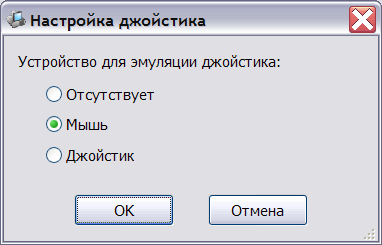

Эмулятор поддерживает интерфейс пультов, который в некоторых программах используется как джойстик.
Режим эмуляции пультов может быть выбран в окне настройки:

Для большинства систем подходит режим эмуляции джойстика мышью, поскольку не требует дополнительного оборудования. Этот режим используется по умолчанию.
При наличии PC-джойстика, он может быть использован для имитации пультов, что может повысить удобство управления в играх.
В случае, если игра некорректно определяет пульты, их имитация может быть отключена (пункт "Отсутствует" в окне настроек).
См. также: Изменение конфигурации, Описание и настройка устройств, Поддерживаемое оборудование, Главное меню